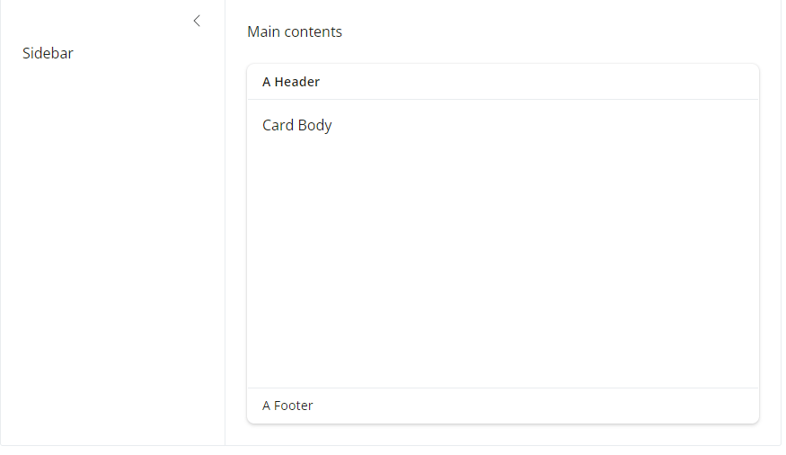

install.packages("shiny")
install.packages("bslib")
install.packages("tidyverse")
install.packages("DT")
install.packages("plotly")
install.packages("leaflet")
install.packages("sf")
install.packages("lubridate")
install.packages("bsicons")Hands-On Shiny: Routine Malaria Data Dashboard Workshop
Setup
Welcome to the “Developing Data Visualisation Dashboards in R” workshop! In this session, we’ll build a Shiny app step by step, exploring what Shiny can do - from basic reactive plots to interactive tables, maps, and advanced UI elements. Each section includes explanatory text, demo code, and exercises for you to try.
Why RShiny?
Shiny lets you turn R code into interactive web applications without needing to learn HTML/CSS/JS.
In malaria programs, routine data (e.g., DHIS2 exports) are key to monitoring. A Shiny dashboard can help stakeholders explore data visually, spot trends, and inform decisions and perform routine analysis.
We’ll continue using our DHIS2 dataset that we just downloaded and cleaned.
Important
Before you begin:
Ensure you have your R Studio Project open.
Ensure you have your DHIS2 cleaned data saved into the correct folder:
data-outputs/data_dhis2_laos_ammnet_cleaned.csvIf you didn’t finish the steps in the earlier session - we have the dataset avaliable for download on the home page.
Install Packages
We need some addiditional packages for this session - install these packages if you don’t have them already using the code below in the console:
These packages will allow us to do the following:
shiny: core package to build apps.bslib: theming (Bootstrap customization) and modern dashboard design elements.tidyverse: data wrangling (dplyr, ggplot2, readr…).DT: interactive tables.plotly: interactive plots.leaflet&sf: mapping spatial data.lubridate: for dealting with date-time.bsicons: for using Bootstrap icons in Shiny.
Objectives
Imagine you are a data analyst for the Minstry of Health and you’ve been tasked with creating a way for Provinces in the country to quickly and easily visualise and compare their malaria trends without the need for individual excel files or analyses. That’s the kind of problem we’re framing our dashboard around today. During this session you will:
Understand key elements of Shiny Dashbaords
Gain hands on experience customising Shiny dashbaords
We can’t cover all aspects of creating Shiny Dashboards but there are a tonne of great resources online we will share during the course of today!
We’ll start by highlighting some key building blocks of dashbboards before moving into customisations and visualisation rendering.
In the end we hope you will have created something like the dashboard as shown below:

Tip
Tips for this tutorial
After each step of the tutorial ensure you press Run App or Refresh App to visualise your changes
Sometimes cleaning the environment or restartng R can be helpful when if your app isn’t updating with changes.
To check the definition, usage and arguements of functions type ? followed by the funcition name in the Console e.g.
?value_box.When designing a Shiny App - always think about the end user and their journey through the application.
Set up App Skeleton
Now we have Shiny installed we can create our first App. Open up a new R script and save it as app.R in your main project folder.
Copy the code below which is a demo app the is built into the Shiny package.
#
# This is a Shiny web application. You can run the application by clicking
# the 'Run App' button above.
#
# Find out more about building applications with Shiny here:
#
# https://shiny.posit.co/
#
library(shiny)
# Define UI for application that draws a histogram
ui <- fluidPage(
# Application title
titlePanel("Old Faithful Geyser Data"),
# Sidebar with a slider input for number of bins
sidebarLayout(
sidebarPanel(
sliderInput("bins",
"Number of bins:",
min = 1,
max = 50,
value = 30)
),
# Show a plot of the generated distribution
mainPanel(
plotOutput("distPlot")
)
)
)
# Define server logic required to draw a histogram
server <- function(input, output) {
output$distPlot <- renderPlot({
# generate bins based on input$bins from ui.R
x <- faithful[, 2]
bins <- seq(min(x), max(x), length.out = input$bins + 1)
# draw the histogram with the specified number of bins
hist(x, breaks = bins, col = 'darkgray', border = 'white',
xlab = 'Waiting time to next eruption (in mins)',
main = 'Histogram of waiting times')
})
}
# Run the application
shinyApp(ui = ui, server = server)This is a simple pre-built demo that generates an app with a slider sliderInput to determine the number of bins on the corresponding histogram plot. You can see with just a few lines of code how easy it is to generate an interactive application!
When you run this with Run App in RStudio, Shiny launches a local web app .
Reactivity: When an input changes, reactive code re-executes and updates outputs automatically.
Lets close this app and go ahead and build own now!
Anatomy of a Shiny App
Before jumping into code, a quick reminder of the basic app structure.
A Shiny app has two key components:
UI(User Interface): defines what users see and interact with: inputs (dropdowns, sliders) and outputs (plots, tables, text). It controls the layout and appearance of your app.Server: R code that reacts to user inputs, does computations, and sends rendered outputs to the UI. It contains the instructions that your computer needs to build your appFinally the
shinyAppfunction creates Shiny app objects from an explicit UI/server pair.
Lets remove the contents of the UI and Server code from the default application to give something like this:
#
# This is a Shiny web application. You can run the application by clicking
# the 'Run App' button above.
#
# Find out more about building applications with Shiny here:
#
# https://shiny.posit.co/
#
library(shiny)
#-Define UI for application - User Interface------------------------------------
ui <- fluidPage(
)
#-Define server logic - Computations--------------------------------------------
server <- function(input, output) {
# reactive expressions, computations and render functions
}
#-Run the application-----------------------------------------------------------
shinyApp(ui = ui, server = server)Now add in our addiditional library calls that we had installed and will need for this application at the top of the script - Ensure this is written outside of the ui and server functions. This will ensure that these packages are loaded when the app starts up.
#-packages needed---------------------------------------------------------------
library(shiny)
library(bslib)
library(tidyverse)
library(DT)
library(plotly)
library(leaflet)
library(sf)
library(lubridate)
library(bsicons)Read In Our Data
Next we need to ensure we read in the correct data to be able to start creating and generating outputs.
Add the following code after the library calls and before the UI code:
#-read in app data once on app start up-----------------------------------------
app_data <-
read.csv("./data-outputs/data_dhis2_laos_ammnet_cleaned.csv") organisation_unit period var_name value
1 01 Vientiane Capital 2024-01-01 malaria_tests 102.00
2 01 Vientiane Capital 2024-01-01 malaria_cases_per_1000 1.26
3 01 Vientiane Capital 2024-01-01 malaria_cases 11.00
4 01 Vientiane Capital 2024-02-01 malaria_tests 109.00
5 01 Vientiane Capital 2024-02-01 malaria_cases_per_1000 1.58
6 01 Vientiane Capital 2024-02-01 malaria_cases 12.00You might notice that the period colum has been read in as a character variable so we need to ensure that this is in date format.
Add the following line of code after you read in the dataset.
# re-classify period as a date
app_data$period <- lubridate::as_date(app_data$period)Now we have our data ready to use in the app, we can start building out the UI and Server components.
Part 1: Shiny Building Blocks
Setting up an Empty Layout
For this tutorial we will focus on building our Shiny app using bslib, a modern UI toolkit that gives your app a clean and responsive layout with minimal effort.
We’ll begin by setting up a basic dashboard skeleton - no data or inputs yet - just the layout structure using bslib::page_sidebar().
This gives us a two-pane layout:
A sidebar (on the left) for inputs or filters
A main content area (on the right) for plots, tables, or summaries
Paste the following code into your app.R file:
#-Load libraries----------------------------------------------------------------
library(shiny)
library(bslib)
library(tidyverse)
library(DT)
library(plotly)
library(leaflet)
library(sf)
library(lubridate)
#-read in app data once on app start up-----------------------------------------
app_data <-
read.csv("./data-outputs/data_dhis2_laos_ammnet_cleaned.csv")
# re-classify period as a date
app_data$period <- lubridate::as_date(app_data$period)
#-Define UI for application - User Interface------------------------------------
ui <- page_sidebar(
title = "My Dashboard", # Title shown in the top bar
sidebar = "Sidebar", # Placeholder sidebar content
"Main content area" # Placeholder for main content (e.g., plots or tables)
)
#-Define server logic - Computations--------------------------------------------
server <- function(input, output) {
# Placeholder for reactive expressions and outputs
}
#-Run the application-----------------------------------------------------------
shinyApp(ui = ui, server = server)What This Does
| Component | Description |
|---|---|
page_sidebar() |
Creates a full-page layout with a sidebar + main area |
title = "..." |
Sets the page title shown in the app’s header bar |
sidebar = "..." |
Placeholder content for the sidebar (we’ll replace this with inputs soon) |
"Main content area" |
Text shown in the main panel (this will later become plots and tables) |
Click Run App in RStudio. You’ll see:
A header bar with the title
A left-hand sidebar with the word Sidebar
A main panel with the text Main content area
üéâ That‚Äôs your first bslib layout up and running!
You can add additional elements to the main panel of the page by supplying them to page_sidebar.
By default, the sidebar panel will appear on the left side of your app. You can move it to the right side by giving sidebar the optional argument position = "right".
üíª Try this now
If you want to, page_sidebar creates a sidebar layout that fills the page, and is a quick way to create a page with a sidebar. If you’d like to create a floating sidebar layout that can appear anywhere on the page, use page_fluid and layout_sidebar.
# Floating sidebar layout
ui <- page_fluid(
layout_sidebar(
sidebar = sidebar("Sidebar"), # sidebar elements
"Main contents" # Main pannel elements
)
)You’ll notice here that the side bar and main contents panes are much smaller now, this is because page_fluid() allows the contents to scale to the required window size to fit the content.
Shiny also allows for more complex layouts too including options for example, page_navbar creates a multi-page user interface that includes a navigation bar. This layout is great for multistage analysis or reporting.
Another option for creating multipage dashbaords is through the Tabs
We will stick to using a single page app today but everything we learn can be applied to controlling multipage apps in the future!
Layout Elements
Cards()
Now we have out sidebar and main panel, we can also add containers to the main panel that will house out our data visualisations, cards() are a common organising unit in modern dashboards.
You can use the function card() to create a card in your Shiny app. card() creates a regular container with borders and padding.
ui <- page_fluid(
layout_sidebar(
sidebar = sidebar("Sidebar"),
"Main contents",
# including a card container in the main panel
card(
height=400 # setting the height of the card to ensure we can see it when empty.
)
)
)Use cards to present grouped and related information. Add content to a card by supplying arguments to card().
Card item functions create various different parts to the card:
card_header()- A header (with border and background color) for thecard(). Typically appears before acard_body().card_footer()- A header (with border and background color) for thecard(). Typically appears after acard_body().card_boady()- A general container for the “main content”
Exercise 1
- Use the above elements to add a
card_header(),card_footer()andcard_body()to our current application - Hint: try adding some plain text in ” ” to each of the elements.
Show Solution
# inclduing card elements
ui <- page_fluid(
layout_sidebar(
sidebar = sidebar("Sidebar"),
"Main contents",
card(
height=400, #height set to 400 pixels
full_screen = TRUE, #allow card to expand if full screnn button is clicked
card_header("A Header"), # add a header
card_body("Card Body"), # add main body
card_footer("A Footer") # add footer
)
)
)
We’ll be using
cards()alot in this tutorial to house the elements of our dashboard. See thebslibCards article to learn more about cards.
value_boxes()
Value boxes are another useful UI component. Use value boxes to highlight important values in your app.
Create a value box with the function value_box().
A value_box() has 4 main parts:
value: Some text value.title: Optional text to display abovevalue.showcase: Optional UI element(s) to display alongside the value.theme: Optional theme to change the appearance of the value box....: Any other text/UI elements to appear belowvalue.
ui <- page_fluid(
#-layout------------------------
layout_sidebar(
#-sidebar---------
sidebar = sidebar("Sidebar"),
#-main pannel content----
"Main contents",
# Value Box
value_box(
title = "Value box", # Title
value = 750 # Value to show
),
# Card
card(
height=400,
full_screen = TRUE,
card_header("A Header"),
card_body("Card Body"),
card_footer("A Footer")
)
)
)To make our value boxes stand-out even more we can enhance their appearance through setting their theme colour and including inforgraphic icons.
value_box(
title = "Value box", # Title
value = 750, # Value to show
showcase = bsicons::bs_icon("laptop"), #include an icon
theme = "pink" # change the box theme colour
)
Note
Note: to use Bootstrap icons, use the function bsicons::bs_icon()
Check out the library of avaliable icons here
We can change the location of value_boxes() using the showcase_layout() arguement - options include "left center", "top-right". or "bottom"
Exercise 2
- Add an addiditional
value_box()andcard()to your current dashboard. Set thecard()to a different height and choose a new icon, theme and icon placement for the addiditionalvalue_box()- Hint: Bootstrap’s theme colors are drawn from a second color list that includes variations on several main colors, named literally. These colors include
"blue","purple","pink","red","orange","yellow","green","teal", and"cyan".
- Hint: Bootstrap’s theme colors are drawn from a second color list that includes variations on several main colors, named literally. These colors include
Show Solution
ui <- page_fluid(
#-layout------------------------
layout_sidebar(
#-sidebar---------
sidebar = sidebar("Sidebar"),
#-main pannel content----
"Main contents",
# Value Box
value_box(
title = "Value box", # Title
value = 750, # Value to show
showcase = bsicons::bs_icon("laptop"), #include an icon
theme = "pink" # change the box theme colour
),
# second value box
value_box(
title = "Value box 2",
value = 1993,
showcase = bsicons::bs_icon("calendar"),
showcase_layout = "top right",
theme = "blue"
),
# Card
card(
height=400,
full_screen = TRUE,
card_header("A Header"),
card_body("Card Body"),
card_footer("A Footer")
),
# Second card box
card(
height = 200,
full_screen = TRUE,
card_header("Another Header"),
card_body("Another Card"),
card_footer("Another Footer")
)
)
)Adjusting Layout Positions
By default, when you add multiple elements to your main panel, Shiny will place them one after another vertically (i.e., one long column). But as we build real dashboards, we often want to organize elements horizontally or into grids to create a cleaner and more informative user interface.
This is where layout functions like layout_columns() and layout_column_wrap() come in.
layout_columns()
The function layout_columns() allows you to place elements next to each other, specifying how many columns wide each element should be. Shiny divides the available space into 12 columns . You can assign any number of columns to each element, as long as they add up to 12 or less.
Let’s try adding moving our two value boxes side by side:
ui <- page_fluid(
#-layout------------------------
layout_sidebar(
#-sidebar---------
sidebar = sidebar("Sidebar"),
#-main pannel content----
"Main contents",
# Value Boxes in a single row
layout_columns(
value_box(
title = "Value box", # Title
value = 750, # Value to show
showcase = bsicons::bs_icon("laptop"), #include an icon
theme = "pink" # change the box theme colour
),
value_box(
title = "Value box 2",
value = 1993,
showcase = bsicons::bs_icon("calendar"),
showcase_layout = "top right",
theme = "blue"
)
),
# Card
card(
height=400,
full_screen = TRUE,
card_header("A Header"),
card_body("Card Body"),
card_footer("A Footer")
),
# Second card box
card(
height = 200,
full_screen = TRUE,
card_header("Another Header"),
card_body("Another Card"),
card_footer("Another Footer")
)
)
)layout_columns() automatically places the two value boxes next to each other. By default, each element inside layout_columns() takes up equal space. If you want more control, you can specify col_widths for each element /12 e.g. col_widths``= c(6, 6).
Exercise 3
- Use
layout_columns()to set thecard()elements into two columns. What do you notice about the height of the cards?
Show Solution
ui <- page_fluid(
#-layout------------------------
layout_sidebar(
#-sidebar---------
sidebar = sidebar("Sidebar"),
#-main pannel content----
"Main contents",
# Value Boxes in a single row
layout_columns(
value_box(
title = "Value box", # Title
value = 750, # Value to show
showcase = bsicons::bs_icon("laptop"), #include an icon
theme = "pink" # change the box theme colour
),
value_box(
title = "Value box 2",
value = 1993,
showcase = bsicons::bs_icon("calendar"),
showcase_layout = "top right",
theme = "blue"
)
),
# Cards in a single row
layout_columns(
card(
height=400,
full_screen = TRUE,
card_header("A Header"),
card_body("Card Body"),
card_footer("A Footer")
),
card(
height = 200,
full_screen = TRUE,
card_header("Another Header"),
card_body("Another Card"),
card_footer("Another Footer")
)
),
)
)The two cards are now the same height as the tallest card. This is because layout_columns() automatically sets the height of each column to match the tallest element in that row.
layout_column_wrap()
If you have many elements and want them to automatically wrap onto multiple rows (like a responsive grid), you can use layout_column_wrap().
For example, you might want to display six value boxes, but have them wrap automatically depending on screen size:
ui <- page_fluid(
#-layout------------------------
layout_sidebar(
#-sidebar---------
sidebar = sidebar("Sidebar"),
#-main pannel content----
"Main contents",
# Value Boxes in a single row that wraps responsive to screen size
layout_column_wrap(
value_box(
title = "Value box", # Title
value = 750, # Value to show
showcase = bsicons::bs_icon("laptop"), #include an icon
theme = "pink" # change the box theme colour
),
value_box(
title = "Value box 2",
value = 1993,
showcase = bsicons::bs_icon("calendar"),
showcase_layout = "top right",
theme = "blue"
),
# addiditional boxes
value_box(title = "Value box 3", value = 123),
value_box(title = "Value box 4", value = 456),
value_box(title = "Value box 5", value = 789),
value_box(title = "Value box 6", value = 101112)
),
# Cards in a single row
layout_columns(
card(
height=400,
full_screen = TRUE,
card_header("A Header"),
card_body("Card Body"),
card_footer("A Footer")
),
card(
height = 200,
full_screen = TRUE,
card_header("Another Header"),
card_body("Another Card"),
card_footer("Another Footer")
)
),
)
)This makes your app much more responsive: as users resize their browser window, the layout adjusts automatically.
Widget Control Elements
Now that we’ve set up a clean layout using bslib, let’s add some interactive functionality, the sidebar is where we direct the user to select inputs the will send messages to the Shiny app. Shiny widgets collect a value from your user. When a user changes the widget, the value will change as well.
Choosing the Right Input controls: A Quick Exploration
Before we add our first user input, it’s helpful to understand a few common types of control widgets in Shiny and when to use them. Inputs allow users to interact with the webpage by clicking a button, entering text, selecting an option, and more.
Shiny provides several ways for users to make selections here are a couple of options:
| Input Type | Function | When to Use |
|---|---|---|
| Dropdown menu | selectInput() |
✅ Best for long lists — compact and searchable |
| Radio buttons | radioButtons() |
✅ Best for short lists with a few clear options (e.g., Yes/No, 3-4 choices) |
| Checkbox group | checkboxGroupInput() |
✅ Best for selecting multiple options |
| Autocomplete select | selectizeInput() |
✅ Similar to selectInput(), but includes type-ahead search by default |
| Single checkbox | checkboxInput() |
✅ Best for simple on/off, true/false inputs |
| Slider | sliderInput() |
✅ Best for selecting continuous values or ranges |
| Numeric input | numericInput() |
✅ Best for precise numeric entry |
| Text input | textAreaInput() |
✅ Best for free text entry (e.g. names, IDs, labels) |
| Date input | dateInput() |
✅ Best for selecting a single date |
| Date range input | dateRangeInput() |
✅ Best for selecting a start and end date |
| File upload | fileInput() |
✅ Best for allowing users to upload files |
| Action button | actionButton() |
✅ Best for triggering explicit actions (e.g. submit, run model) |
Each widget function requires several arguments. The first two arguments for each widget are
a name for the widget: The user will not see this name, but you can use it to access the widget’s value. The name should be a character string.
a label: This label will appear with the widget in your app. It should be a character string, but it can be an empty string
"".
In this example, the name is “action” and the label is “Action”: actionButton("action", label = "Action")
The remaining arguments vary from widget to widget, depending on what the widget needs to do its job. They include things like initial values, ranges, and increments. You can find the exact arguments needed by a widget on the widget function’s help page, (e.g., ?selectInput).
Exercise 4
- For our dashboard, we want to be able to select a single province to display our data - lets test out some of these examples above and select the most appropriate option for our dashboard.
Replace your sidebar code with the following:
sidebar = list(
p("Test different input styles. Which one works best for selecting a province from a long list?"),
selectInput(
inputId = "dropdown_test", # ID name that can pass to the server as input$dropdown_test for processing
label = "Dropdown input (selectInput):", # Title the user sees on the UI
choices = sort(unique(app_data$organisation_unit)) # values to shown in the list drawn from all the unit names in our dataset
),
radioButtons(
inputId = "radio_test",
label = "Radio buttons (radioButtons):",
choices = sort(unique(app_data$organisation_unit))
),
checkboxGroupInput(
inputId = "checkbox_test",
label = "Checkbox group (checkboxGroupInput):",
choices = sort(unique(app_data$organisation_unit))
)
)Reflect:
What happens when the list is long?
Which is more space-efficient?
What would help users most?
Show Solution
For this app, we’ll use selectInput() because:
We have many provinces to choose from
We only need one selection at a time
It’s clean, compact, and familiar
Putting it all together
Lets now create the skeleton of our dashboard. Firstly what we want to be able to do is allow user to select a Province.
We’ll start by updating the UI to add a control widget that selects for province and in Part 2 we will address adding reactive elements to our output containers.
Let’s now update the sidebar to add a proper dropdown input for Province selection. Remember to ensure we are reading in our dataset prior to the UI and Server code.
#-sidebar---------
sidebar = sidebar(
# Add user input selection
p("User Inputs"), # Title
selectInput(
inputId = "province_select", # ID value
label = "Select a Province:", # UI side Title
choices = c("", sort(unique(app_data$organisation_unit))), # empty first value followed by all of our unique org_unit names
selected = "" # default value that the application starts with as selected - in our case we want this to be blank.
)
),What this is doing:
| Function/Argument | Description |
|---|---|
selectInput() |
Adds a dropdown input where users can choose a Province |
inputId = "province_select" |
This ID connects the UI to the server logic (we’ll use it in Part 2) |
choices = ... |
Pulls all Province names from the dataset and sorts them alphabetically |
selected = NULL |
No Province is pre-selected when the app first loads |
Pause & Reflect: Where We Are
Before we move forward, take a quick moment to review what you’ve built so far:
✅ You’ve created your own Shiny app from scratch.
✅ You set up a modern dashboard layout using bslib::page_fluid() and layout_sidebar()
✅ You’ve learned how to organize content using:
card()to hold your future plots and tablesvalue_box()to display key summary indicatorslayout_columns()andlayout_column_wrap()to control the page structure
✅ You’ve explored how to place interactive control widgets into the sidebar using selectInput(), which will allow users to filter the data.
Quick self-check questions
Do you understand the difference between UI and Server parts of the app?
Can you identify where the user interacts (inputs) vs where outputs will be displayed?
Do you feel comfortable adding more cards, value boxes, or inputs to your app?
Part 2 Reactivty and Rendering output
In Part 2, you will learn:
How to add display elements into the dashbaord cards.
How to connect your
selectInput()dropdown to your dataset.How to filter data reactively based on user selections.
How to update your value boxes and outputs automatically when the user interacts.
In Shiny, reactive expressions automatically update when the user interacts with your app.
Shiny Output Types
You can create reactive outputs with a two step process.
Add an R object to your user interface.
Tell Shiny how to build the object in the server function. The object will be reactive if the code that builds it calls a widget value.
Shiny provides a family of functions that turn R objects into output for your user interface. Each function creates a specific type of output.
Below is a summary of some key output types, the functions to tell shiny what the expect in the UI and the functions to create it in the server and a short desciption of when to use.
| Output Type | Render Function (Server) | Display Function (UI) | When to Use |
|---|---|---|---|
| Text | renderText() |
textOutput() |
Display simple text strings |
| Tables (static) | renderTable() |
tableOutput() |
Show small static tables |
| Tables (interactive) | renderDT() |
DT::dataTableOutput() |
Show sortable, searchable tables |
| Plots (static) | renderPlot() |
plotOutput() |
Standard static plots (ggplot, base R plots) |
| Plots (interactive) | renderPlotly() |
plotlyOutput() |
Fully interactive plots (hover, zoom, pan) |
| Leaflet Maps | renderLeaflet() |
leafletOutput() |
Interactive geographic maps |
| Images | renderImage() |
imageOutput() |
Display image files (PNG, JPG, etc.) |
| UI elements (dynamic) | renderUI() |
uiOutput() |
Dynamically generate any custom UI |
| Value Boxes | (no render function) | value_box() |
Display single KPI summary values |
What you will notice is that Every output type has:
One render function → goes in the server
One output function → goes in the UI
And you connect them using a shared outputId
Building Reactive Outputs: ui and server crosstalk
Lets work through an example to display the Province that the user selected in the first card of our current dashboard.
We want to show some text that says:
“You have selected: [Province]”
To do this, we add textOutput() to the UI where we want the text to appear,in this instance we add it to the card_body() call to our first card.
# Cards in a single row
layout_columns(
card(
height=400,
full_screen = TRUE,
card_header("A Header"),
card_body(textOutput("selected_province_text")), # add textOutput to display selected province),
card_footer("A Footer")
),
card(
height = 200,
full_screen = TRUE,
card_header("Another Header"),
card_body("Another Card"),
card_footer("Another Footer")
)
)
Note
Notice that textOutput takes an argument, the character string "selected_province_text". Each of the *Output functions require a single argument: a character string that Shiny will use as the name of your reactive element. Your users will not see this name, but you will use it later.
Placing a function in ui tells Shiny where to display your object. Next, you need to tell Shiny how to build the object.
We do this by providing the R code that builds the object in the server function.
The server function plays a special role in the Shiny process; it builds a list-like object named output that contains all of the code needed to update the R objects in your app. Each R object needs to have its own entry in the list.
You can create an entry by defining a new element for output within the server function, like below. The element name should match the name of the reactive element that you created in the ui.
In the server function below, output$selected_province_text matches textOutput("selected_province_text ") in your ui.
server <- function(input, output) {
output$selected_province_text <- renderText({
# If nothing is selected, show a default message
if (input$province_select == "") {
"No Province Selected"
} else {
# otherwise show the selected value
paste("You have selected:", input$province_select)
}
})
}input is a second list-like object created by the server function. It stores the current values of all of the widgets in your app. These values will be saved under the names that you gave the widgets in your ui.
So for example, our app has one widget, one named "province_select" .The values of "province_select" will be saved in input as input$province_select.
Shiny will automatically make an object reactive if the object uses an input value. For example, the server function above creates a reactive line of text by calling the value of the select box widget to build the text.
When the user changes the province name the text outoput will update automatically - try this out.
What you just learned:
| Part | Code |
|---|---|
| UI | textOutput("selected_province_text") |
| Server | output$selected_province_text <- renderText({ ... }) |
| Link | Both use the same ID: "selected_province_text" |
Each entry to output$ <- should contain the output of one of Shiny’s render* functions. These functions capture an R expression and do some light pre-processing on the expression. Use the render* function that corrresponds to the type of reactive object you are making (Pairs are listed in the table above).
Each render* function takes a single argument: an R expression surrounded by braces, {}. The expression can be one simple line of text, or it can involve many lines of code, as if it were a complicated function call.
Think of this R expression as a set of instructions that you give Shiny to store for later. Shiny will run the instructions when you first launch your app, and then Shiny will re-run the instructions every time it needs to update your object.
For this to work, your expression should return the object you have in mind (a piece of text, a plot, a data frame, etc.). You will get an error if the expression returns the wrong type of object.
Reactivity and Data
In the previous step our app simply reacts to the user input and displays the Province - now we want to also tell our App to do more with that information by filtering and displaying summary data from our DHIS2 data pull.
We want to compute (for now, keep it simple):
- Total number of malaria cases reported in the selected province for the year
We know our dataset is called app_data, and malaria cases are stored where var_name == "malaria_cases".
Inside your server() function, add:
server <- function(input, output) {
# Reactive data filter - filter the app_data when input value is selected
province_data <- reactive({
req(input$province_select != "") # Only run if province selected
app_data %>%
filter(organisation_unit == input$province_select) # filter dataset to Province selected
})
# Compute total cases from filtered data
output$total_cases_box <- renderText({
df <- province_data() # this act like a function and pulls through our filtered data to an object inside renderText called 'df'
total_cases <- df %>%
filter(var_name == "malaria_cases") %>% # filters to malaria cases data only
summarise(total = sum(value, na.rm = TRUE)) %>% # sums values over all periods included
pull(total) # pulls out the value from summary calculation into named vector
total_cases # final value
})
}Here we have made our province_data() object reactive - what this means is that every time input$province_select changes, Shiny will automatically re-execute any code that depends on province_data().
We use the filtered province_data() in the output$total_cases_box to then create a single value of total cases reported that year.
We’re using renderText() as our server side output function - we need to feed this information to our updated value_box() UI code next.
We want to replace the value argument with the dynamic text from our server "total_cases_box". In your ui, replace the original value box with:
value_box(
title = "Total Cases Reported",
value = textOutput("total_cases_box"), # reactive value taken from server side outputs
showcase = bsicons::bs_icon("journal-medical"),
showcase_layout = "top right",
theme = "pink"
)Summary of updates
| Reactive filter | province_data <- reactive({ ... }) |
| Computation | summarise() inside renderText() |
| Output rendering | output$total_cases_box <- renderText({ ... }) |
| UI linkage | value = textOutput("total_cases_box") |
Exercise 5
- Update the second value box to compute and display total annual tests (
var_name == "malaria_tests"), update the icon to match the data reporting type, and remove the remaining value boxes for now,
Show Solution
# update the value box to contain a renderOutput call
value_box(
title = "Total Tests Reported",
value = textOutput("total_tests_box"), #render output call
showcase = bsicons::bs_icon("journal-medical"), # update icon
showcase_layout = "top right",
theme = "blue"
) #-Compute total tests from filtered data--------------------------------------------
output$total_tests_box <- renderText({
df <- province_data() # pull filtered province data
total_tests <- df %>%
filter(var_name == "malaria_tests") %>%
summarise(total = sum(value, na.rm = TRUE)) %>% #sum total tesats
pull(total)
total_tests # return value
})Good job! We’ll come back to our value boxes later to add more functionality, but for now let’s focus on adding a time series plot to visualize the reported malaria cases over time.
Adding a Reactive Plot
Now that we have our value boxes displaying total cases and tests, let’s add a time series plot to visualize malaria cases over time for the selected Province.
We’ll use: plotlyOutput() in our UI card to reserve a space for an interactive chart.
Lets update one of our existing cards to include a plotly output.
layout_columns(
card(
height=400,
full_screen = TRUE,
card_header("Monthly Malaria Cases"), # informative card header
card_body(plotlyOutput("ts_plot")), # include plotlyOutput in the card body and name this output ts_plot
card_footer("Data source: DHIS2 export") #informative card footer
),
card(
height = 200,
full_screen = TRUE,
card_header("Another Header"),
card_body("Another Card"),
card_footer("Another Footer")
)
)This creates a card with a header, a plotly output area, and a footer. The plotlyOutput("ts_plot") is where our time series plot will go.
Now that we’ve created a space for our plot in the UI, it’s time to write the server-side logic that:
Creates a time series plot of malaria cases
Displays that plot inside the
ts_plotoutput that we just specified
Add the following code to the server function:
#-Plot of reported cases over time selected by province---------------------------------
output$ts_plot <- renderPlotly({
df <-
province_data() %>% # get province data
filter(var_name == "malaria_cases") # reduce to cases
req(nrow(df) > 0) # Ensure there are rows to plot
# Create a ggplot time series of time on the xaxis cases on the y
p <-
ggplot(df, aes(x = period, y = value)) +
geom_line() + #add line style
geom_point() + # add points to the line
labs(
title = paste("Confirmed Malaria Cases in:", input$province_select), # add selected province to the title
x = "Month",
y = "Confirmed Cases"
) +
theme_minimal()
# Convert ggplot to interactive Plotly object
ggplotly(p)
})What this is doing:
renderPlotly(): Tells Shiny how to render theplotlyOutput()in the UIggplot(): creates a time series plot withgeom_line()to show the trend of confirmed cases over time.ggplotly(): converts the ggplot object to a Plotly object for interactivity.
Test It
Run your app and try the following:
Select a Province from the dropdown
Watch the plot appear in the card
Hover over points to see values
Try selecting a different Province, the plot updates automatically!
Note
üìä Plotly for Interactive Plots
The Plotly package allows you to turn static ggplot2 charts into interactive visualizations. This means users can hover over points, zoom in, pan across the plot, and see tooltips with data values.
In Shiny, this is especially useful for dashboards where you want dynamic, user-driven exploration of your data.
We use the ggplotly() function to convert a regular ggplot object into a Plotly object, making it fully interactive with minimal changes to your code.
Just remember that not all ggplot2 features translate perfectly, some customization may require testing or tweaking. Or you can always build plots directly using Plotly code but for now we’ll stick with ggplot > ploty conversion.
Exercise 6 -7:
- Modify the plot to include both confirmed cases and malaria tests as two lines (different colors). Hint: check back in your DHIS2 extraction slides for an example plotting multiple indicators. Hint: edit the
var_name %in% c()filter to select both indicators. Once rendered plotly has an option to view both hover labels at the same time - see if you can make this work in your local app.
Show Solution
First update the card header
card(
height=400,
full_screen = TRUE,
card_header("Monthly Malaria Indicators"), # Update informative card header
card_body(plotlyOutput("ts_plot")),
card_footer("Data source: DHIS2 export")
)Add the addiditional variable call in the filter and include plot colours - here i’ve selected those in AMMnet Branding.
#-Plot of reported values over time selected by province---------------------------------------
output$ts_plot <- renderPlotly({
df <-
province_data() %>% # get province data
filter(var_name %in% c("malaria_cases", "malaria_tests")) # reduce to cases AND tests
req(nrow(df) > 0) # Ensure there are rows to plot
# Create a ggplot time series of time on the xaxis cases on the y, colour by data type
p <-
ggplot(df, aes(x = period, y = value, col=var_name)) +
geom_line() + #add line style
geom_point() + # add points to the line
labs(
title = paste("Malaria Indicators Cases in:", input$province_select), # add selected province to the title and change name
x = "Month",
y = "Value", # Update
col="Indicator" # Update
) +
scale_color_manual(values = c("malaria_cases" = "#571845", "malaria_tests" = "#C42847"))+ # set the colour values
theme_minimal()
# Convert ggplot to interactive Plotly object
ggplotly(p)
})
- Add a new input selection that lists the two data elements (“confirmed cases”, “malaria tests”) so users can toggle which series appear. Hint use:
checkboxGroupInput()to allow multiple selections to be toggeled on and off. Hint think carefully about how to use the newinput$value to filter the dataset.
üí° Show Solution
#-sidebar---------
sidebar = sidebar(
# Add user input selection
p("User Inputs"), # Title
# Province selection
selectInput(
inputId = "province_select", # ID value
label = "Select a Province:", # UI side Title
choices = c("", sort(unique(app_data$organisation_unit))), # empty first value followed by all of our unique org_unit names
selected = "" # default value that the application starts with as selected - in our case we want this to be blank.
),
# Data series toggle
checkboxGroupInput(
inputId = "series_select", # give usable ID
label = "Select data series:", # UI side title
choices = c("Confirmed Cases" = "malaria_cases", # filter variables with nice formatting for the UI
"Malaria Tests" = "malaria_tests"),
selected = NULL #ensure selection is empty initially
)
)#-Plot of reported values over time selected by province---------------------------------------
output$ts_plot <- renderPlotly({
df <-
province_data() %>% # get province data
filter(var_name %in% input$series_select) # Get the filtered data as per input
req(nrow(df) > 0) # Ensure there are rows to plot
# Create a ggplot time series of time on the xaxis cases on the y, colour by data type
p <-
ggplot(df, aes(x = period, y = value, col=var_name)) +
geom_line() + #add line style
geom_point() + # add points to the line
labs(
title = paste("Malaria Indicators Cases in:", input$province_select), # add selected province to the title and change name
x = "Month",
y = "Confirmed Cases",
col="Indicator"
) +
scale_color_manual(values = c("malaria_cases" = "#571845", "malaria_tests" = "#C42847"))+ # set the colour values
theme_minimal()
# Convert ggplot to interactive Plotly object
ggplotly(p)
})
End of Part 2 — What You’ve Built So Far
✅ You now have a fully reactive dashboard skeleton:
Inputs: User selects a Province and which data series to view.
Reactive filtering: The app filters the dataset automatically.
Outputs:
Value boxes update in real-time
Interactive time series plots update dynamically
You’ve seen how both text-based and graphical outputs follow the same reactivity pattern.
Part 3: Evolving Features - Making Our App Better!
Now that we’ve built the basic functionality of our dashboard, let’s improve the user experience, visual polish and ensure that all cards and value boxes contain useful information to the end-user.
Firstly here are small enhancements that go a long way in making your app more intuitive, accessible, and navigable for the user.
Adding messages and prompts üìß
When we first launch the app, the dashboard appears blank until a user selects a Province and at least one data series. While this is expected, it might not be intuitive for users who are unfamiliar with how the app works.
To improve the user experience, we can add helpful messages that appear when required inputs are missing. This kind of feedback, often referred to as conditional UI messaging, helps guide users through the app and ensures they understand what to do next.
We’ll use the validate() and need() functions from Shiny to conditionally display informative prompts in place of a plot until the required input is provided.
To do this we can add the following code to the top of all of our server code for value boxes add:
# condiditional messaging - Check if province selection is made and if not display the following message
validate(
need(input$province_select != "", "Select a province")
)To the plot server code add the following:
# condiditional messaging - Check if province selection is made and if not display the following message
# Check if data selected and prompt to select data series
validate(
need(input$province_select != "", "Please select a province to view data."),
need(length(input$series_select) > 0, "Please select at least one data elemtent to generate the plot.")
)What This Does:
validate()Tells Shiny to check conditions before rendering outputneed()Provides a custom message that is shown in the output space when a condition isn’t met.These messages appear in the same area where the plot would go, giving users immediate, contextual guidance.
Adding a Short Description of the Application üñäÔ∏è
As we continue to improve the user experience, it’s helpful to provide some context or instructions directly in the app. One simple but effective enhancement is adding a short descriptive text at the top of the sidebar panel and a Title to the main plot output.
This gives users a quick overview of what the tool does, what the inputs mean, or what they should expect to see - without needing to refer to an external guide.
Exercise 8
- In your
uireplace thep("User Inputs")with a more informative description. And add a main title to replace"Main contents". Hint use the functionh1(" ")to add your title as this will give it a Header level 1 style.
Show Solution
#-sidebar---------
sidebar = sidebar(
# informative title
p("Dashboard for examining province level malaria indicators in Laos.
Select a province and data series to view the trends over time."),
# Province selection
selectInput(
inputId = "province_select", # ID value
label = "Select a Province:", # UI side Title
choices = c("", sort(unique(app_data$organisation_unit))), # empty first value followed by all of our unique org_unit names
selected = "" # default value that the application starts with as selected - in our case we want this to be blank.
),
# Data series toggle
checkboxGroupInput(
inputId = "series_select", # give usable ID
label = "Select data series:", # UI side title
choices = c("Confirmed Cases" = "malaria_cases", # filter variables with nice formatting for the UI
"Malaria Tests" = "malaria_tests"),
selected = NULL #ensure selection is empty initially
)
),
#-main pannel content----
h1("Malaria Indicators Dashboard"), # Main title of the appWhat This Does:
The
p()function inserts a paragraph of plain text at the top of the sidebar.This lightweight description gives users quick context about what they’re seeing and how to interact with the app.
Keep this description short and scannable. If you want to include more detailed information (e.g., methodology or indicator definitions), we could use a collapsible help text, a modal popup, or a separate “About” tab - we’ll suggest some resources for this later in the tutorial.
Theming with bs_theme üé®
Until now, our dashboard has been using the default Shiny style: functional,but plain and we added colour values to our value_box. We can now take advantage of the bslib package to apply modern, responsive theming with just a few lines of code (via bootswatch).
Applying a theme makes your app easier to use, improves readability, and gives it a more professional look - especially useful when sharing with stakeholders or integrating into your organization’s brand.
We can tell our app directly to use a built-in theme in the UI code:
#-Define UI for application - User Interface------------------------------------
ui <- page_fluid(
#-layout------------------------
layout_sidebar(
#-sidebar---------
sidebar = sidebar(
# informative title
p("Dashboard for examining province level malaria indicators in Laos.
Select a province and data series to view the trends over time."),
# Province selection
selectInput(
inputId = "province_select", # ID value
label = "Select a Province:", # UI side Title
choices = c("", sort(unique(app_data$organisation_unit))), # empty first value followed by all of our unique org_unit names
selected = "" # default value that the application starts with as selected - in our case we want this to be blank.
),
# Data series toggle
checkboxGroupInput(
inputId = "series_select", # give usable ID
label = "Select data series:", # UI side title
choices = c("Confirmed Cases" = "malaria_cases", # filter variables with nice formatting for the UI
"Malaria Tests" = "malaria_tests"),
selected = NULL #ensure selection is empty initially
)
),
#-main pannel content----
h1("Malaria Indicators Dashboard"), # Main title of the app
# Value Boxes in a single row that wraps responsive to screen size
layout_column_wrap(
value_box(
title = "Total Cases Reported",
value = textOutput("total_cases_box"), # reactive value taken from server side outputs
showcase = bsicons::bs_icon("journal-medical"),
showcase_layout = "top right",
theme = "pink"
),
value_box(
title = "Total Tests Reported",
value = textOutput("total_tests_box"), #render output call
showcase = bsicons::bs_icon("journal-medical"), # update icon
showcase_layout = "top right",
theme = "blue"
)
# addiditional boxes
# value_box(title = "Value box 3", value = 123),
# value_box(title = "Value box 4", value = 456),
# value_box(title = "Value box 5", value = 789),
# value_box(title = "Value box 6", value = 101112)
),
# Cards in a single row
layout_columns(
card(
height=400,
full_screen = TRUE,
card_header("Monthly Malaria Indicators"), # informative card header
card_body(plotlyOutput("ts_plot")), # include plotlyOutput in the card body and name this output ts_plot
card_footer("Data source: DHIS2 export") #informative card footer
),
card(
height = 200,
full_screen = TRUE,
card_header("Another Header"),
card_body("Another Card"),
card_footer("Another Footer")
)
)
),
# <<< NEW >>> Defining the theme of your app
theme = bs_theme(
version = 5, # Use Bootstrap 5
bootswatch = "darkly", # Choose a Bootswatch theme
base_font = font_google("Roboto") # Optional: use a modern font
)
)Exercise 9
- Try replacing
"darkly"with other Bootswatch themes like"cosmo","journal","sandstone","minty", or"cybord"or select from the webpage linked.
You can also try out styles live inside your app using bs_themer(). To use it, just call bs_themer() once inside your server() function:
server <- function(input, output) {
bs_themer()
# The rest of our code ...
} As well as experimenting with pre-built themes you can also customise your own theming using the bs_themer for example if I played around in the theming and decided I wanted to use some colours similar to the AMMnet branding I could do this and then in my R console bs_themer lets us know what we changed and then we can add this to our theme = bs_theme() call. This is really helpful for playing with branding of your app to match with your organisations branding.
theme = bs_theme(
version = 5,
fg = "rgb(100, 16, 59)", # set the foreground colour
bg = "rgb(253, 251, 252)", # set the background colour
primary = "#7C204F", # set the primary colour
secondary = "#F7CBE6" # set the secondary colour
)
Caution
Don’t forget to remove bs_themer() from the server() once you’re done — it’s just for development.
To give users the opportunity to pick between a light or dark mode of your dashboard too you can simply implement the following in the ui
Here we place it after the description in the sidebar but you can place it anywhere in the UI and set the default to start the app in light mode.
# add dark/light switch
input_dark_mode(mode="light")Now we have developed a theme we have another option for how to set the theme arguement for our value boxes. To ensure that when we change the theme of our app our value boxes automatically align with that theme we can set the theme arguement to be "primary" or “secondary" and the boxes will inherit the colour values of the themes primary and secondary colours - let’s add this now.
# Value Boxes in a single row that wraps responsive to screen size
layout_column_wrap(
value_box(
title = "Total Cases Reported",
value = textOutput("total_cases_box"), # reactive value taken from server side outputs
showcase = bsicons::bs_icon("journal-medical"),
showcase_layout = "top right",
theme = "secondary" # app theme colour secondary
),
value_box(
title = "Total Tests Reported",
value = textOutput("total_tests_box"), #render output call
showcase = bsicons::bs_icon("journal-medical"), # update icon
showcase_layout = "top right",
theme = "secondary" #app theme colour secondary
)
# addiditional boxes
# value_box(title = "Value box 3", value = 123),
# value_box(title = "Value box 4", value = 456),
# value_box(title = "Value box 5", value = 789),
# value_box(title = "Value box 6", value = 101112)
)Exercise 10
- Now you have the value boxes set to inherit theme colours test out some more themes are render your app to see how these automatically change. Hint: try setting each value box theme to a different value.
Adding a Logo to Your App
Once you’ve customized the colors and fonts, finish off your look by adding a logo (or icon/banner) to the top of your sidebar = sidebar() code.
#-sidebar---------
sidebar = sidebar(
# add a logo
tags$img(src = "AMMnet-logo.png"), # make sure this image exists in a folder called www Then do the following:
Folder Setup
Create a
www/folder in your app directory if it doesn’t exist.Save your logo or image as
logo.png(or any name but it must match what you coded up).Shiny will automatically read image files from that folder.
Exercise 11
- Find a logo online (e.g., your org, a flag, or malaria-related symbol or an image of your pet). Create and save it to your app’s
www/folder. Add it to the sidebar usingtags$img().
Wrapping up Part 3 — Building for the User
In Part 3, we made your app feel more professional and intuitive for end users:
Added validation messages to guide users when inputs are missing.
Included descriptive text in your sidebar and main title.
Applied a customizable visual theme with
{bslib}.Enhanced branding by adding a logo.
Made sure your value boxes inherit theme colors automatically.
These are small details — but they make your app feel polished, intentional, and ready to share with end users.
Part 4: Addiditional Outputs
Now that we’ve built a simple reactive and styled our app, let’s level up by introducing addiditional output types - we can convey more information than what we have currentlly presented in our app by adding more outputs.
A reminder that Shiny supports a wide range of different output types
We’ll walk through some different examples of outputs how we can control their appearance/dissapearance in the app.
Computed Variables and Conditional Widgets
One of the powerful benefits of building dashboards in R is that we can compute new indicators directly inside our Shiny app using the data already loaded.
Let’s take Test Positivity Rate (TPR) as an example. This isn’t directly stored in our dataset but can easily be computed:
TPR = Confirmed Cases / Malaria Tests
We will create this as a computed reactive output, and allow the user to toggle whether they want to view this indicator.
This approach is helpful in malaria dashboards where:
Some indicators are derived
Users may want optional, on-demand metrics
You want to avoid recalculating unnecessary metrics until they are requested
Let’s start by giving the user a checkbox to control whether to calculate and display TPR:
Below our current data series selection include a new Input:
#-sidebar---------
sidebar = sidebar(
# add a logo
tags$img(src = "AMMnet-logo.png"), # make sure this image exists in a folder called www
# informative title
p("Dashboard for examining province level malaria indicators in Laos.
Select a province and data series to view the trends over time."),
# add dark/light switch
input_dark_mode(mode="light"),
# Province selection
selectInput(
inputId = "province_select", # ID value
label = "Select a Province:", # UI side Title
choices = c("", sort(unique(app_data$organisation_unit))), # empty first value followed by all of our unique org_unit names
selected = "" # default value that the application starts with as selected - in our case we want this to be blank.
),
# Data series toggle
checkboxGroupInput(
inputId = "series_select", # give usable ID
label = "Select data series:", # UI side title
choices = c("Confirmed Cases" = "malaria_cases", # filter variables with nice formatting for the UI
"Malaria Tests" = "malaria_tests"),
selected = NULL #ensure selection is empty initially
),
# Test Positivity toggle
checkboxInput(
inputId = "include_tpr", # name ID
label = "Calculate and diaplay Test Positivity Rate (TPR)", # User side title
value = FALSE # set to be unclicked as default
)
)However — we only want this checkbox to be available when both malaria_cases and malaria_tests are selected for plotting. Otherwise, calculating TPR doesn’t make sense.
Shiny allows us to dynamically render UI elements using renderUI(). We’ll modify our sidebar to only display the TPR toggle when both series are selected. Replace the code in the ui with:
# <<< Replace static checkbox with this dynamic output using the uiOutput() call
uiOutput("tpr_checkbox_ui")Then add this logic to your server() function:
#-Conditional UI element for TPR checkbox------------------------------------------------------
output$tpr_checkbox_ui <- renderUI({
if (all(c("malaria_cases", "malaria_tests") %in% input$series_select)) {
# Only show the checkbox if both series are selected
checkboxInput(
inputId = "include_tpr", # name ID
label = "Calculate and diaplay Test Positivity Rate (TPR)", # User side title
value = FALSE # set to be unclicked as default
)
} else {
# If not both series selected, return NULL to not display the checkbox
NULL
}
})Once the toggle exists, we can build a reactive plot that only displays if:
A province is selected
Both indicators are selected
The TPR checkbox is enabled
Inside the UI element update the empty card with the following logic:
# Cards in a single row
layout_columns(
card(
height=400,
full_screen = TRUE,
card_header("Monthly Malaria Indicators"),# informative card header
card_body(plotlyOutput("ts_plot")), # include plotlyOutput in the card body and name this output ts_plot
card_footer("Data source: DHIS2 export") #informative card footer
),
card(
height = 400,
full_screen = TRUE,
card_header("Monthly Malaria Test Positivity"), # informative card header
card_body(plotlyOutput("tpr_plot")), # include plotlyOutput in the card body and name this output tpr_plot
card_footer("Data source: DHIS2 export") # informative card footer
)
)
)Inside your server() function we can add new plot code along with some addiditional prompts to the user:
#-Conditional rendering of TPR plot------------------------------------------------------------
output$tpr_plot <- renderPlotly({
# Use validate + need to provide informative user messages
validate(
need(input$include_tpr, "Enable TPR toggle to display plot."),
need(input$province_select != "", "Please select a province to view data."),
need(length(input$series_select) == 2, "Please select both malaria cases and malaria tests to calculate TPR.")
)
# calculate TPR - Test Positivity Rate
df <-
province_data() %>% # get the filtered province data
pivot_wider(names_from = var_name, values_from = value) %>% # pivot the data wider to have cases and tests in separate columns
arrange(period) %>% # arrange by period
mutate(
tpr = round((malaria_cases / malaria_tests) * 100, 2) # calculate TPR as a percentage - rounded to 2 decimal places
)
# Plot the TPR over time
p <-
ggplot(df, aes(x = period, y = tpr)) +
geom_point(color = "#FECC01") +
labs(
title = paste("Test Positivity Rate (TPR) in:", input$province_select), # add selected province to the title
x = "Month",
y = "TPR (%)"
) +
theme_minimal() +
scale_y_continuous(limits = c(0, 100)) # set y-axis limits from 0 to 100%
ggplotly(p) # convert ggplot to plotly object
})Once a user safely selects all of the inputs a plot will generate.
validate()+need()provide friendly user-facing error messages inside the plot container.Only once all conditions are met, the plot is rendered.
This is much more user-friendly than simply leaving the plot blank or throwing errors!
Exrecise 12
Now let’s reinforce your learning with a short coding challenge:
- Create a new value box that displays the average TPR for the year, but only when the checkbox
include_tpris turned on.
Your logic should:
- Calculate the TPR inside the server (same as you did for the other value boxes) but use
sumarise(tpr = mean(tpr, na.rm = TRUE)to take the average value. - Conditionally display the value box only when the checkbox
include_tpris TRUE - Keep using
province_data()for your data filtering - You can use
renderUI()to conditionally create the value box.
Show Solution
Compute average TPR: Add this to your server():
#-average TPR value box-----------------------------------------------------------------
output$tpr_value <- renderText({
req(input$include_tpr) # requires the TPR check to be TRUE
# data processing
df <-
province_data() %>% # filters to province
pivot_wider(names_from = var_name, values_from = value) %>% #widens data frame to have a column per indicator
mutate(
tpr = round((malaria_cases / malaria_tests) * 100, 2) # calculates TPR as a percentage
) %>%
summarise(
tpr = mean(tpr, na.rm=TRUE) # takes average of TPR on % scale
)
avg_tpr <- round(df$tpr, 1) # rounds to one decimal place
avg_tpr # returns value
})Update UI code to include
layout_column_wrap(
value_box(
title = "Total Cases Reported",
value = textOutput("total_cases_box"), # reactive value taken from server side outputs
showcase = bsicons::bs_icon("journal-medical"),
showcase_layout = "top right",
theme = "secondary" # app theme colour secondary
),
value_box(
title = "Total Tests Reported",
value = textOutput("total_tests_box"), #render output call
showcase = bsicons::bs_icon("journal-medical"), # update icon
showcase_layout = "top right",
theme = "secondary" #app theme colour secondary
),
#conditional value box for TPR
uiOutput("tpr_value_box") # this is a reactive value box that will only show if the TPR checkbox is selected
)Tell the server what to place in “tpr_value”
#-Render the value box for TPR if checkbox is selected---------------------------------------------
output$tpr_value_box <- renderUI({
# Check if the TPR checkbox is selected
if (isTRUE(input$include_tpr)) { # requires TPR check to be active
# standard value box set up
value_box(
title = "Average TPR (%)", # Title
value = textOutput("tpr_value"), # using condiditional value
showcase = bsicons::bs_icon("percent"), #Icon
showcase_layout = "top right", # placement
theme = "secondary" # colour theme
)
} else {
NULL # if not checked then nothing is displayed
}
})You may notice here that our app has a blank space where the Test Positivity values are expected to be which doesn’t look very professional.
To prevent the empty placeholder space when the toggle is off, we can dynamically generate the entire set of value boxes using renderUI().
Instead of placing uiOutput("tpr_value_box") inside your existing layout_column_wrap(), we will let the server fully control which value boxes appear at any moment.
First we replace the current ui code for our value boxes with the following:
# Value Boxes in a single row that wraps responsive to screen size and data selection
uiOutput("value_boxes")Then link the value_boxes to a server side output:
#-Value Box dynamic number based on TPR toggle-----------------------------------------------------
output$value_boxes <- renderUI({
# Always include these two
boxes <- list(
value_box(
title = "Total Cases Reported",
value = textOutput("total_cases_box"),
showcase = bsicons::bs_icon("journal-medical"),
showcase_layout = "top right",
theme = "secondary"
),
value_box(
title = "Total Tests Reported",
value = textOutput("total_tests_box"),
showcase = bsicons::bs_icon("journal-medical"),
showcase_layout = "top right",
theme = "secondary"
)
)
# Conditionally add TPR box only if checkbox is ON
if (isTRUE(input$include_tpr)) {
boxes <- append(boxes, list(
value_box(
title = "Average TPR (%)",
value = textOutput("tpr_value"),
showcase = bsicons::bs_icon("percent"),
showcase_layout = "top right",
theme = "secondary"
)
))
}
# Wrap all boxes inside layout_column_wrap
layout_column_wrap(!!!boxes)
})The
!!!operator (fromrlang) safely unpacks the list into multiple arguments forlayout_column_wrap(). This allows us to dynamically build the list of value boxes.
Now your app will only show the TPR value box when appropriate — without leaving any empty space when the toggle is off!
renderUI()gives you full control over when and how UI elements appear.You avoid “empty shells” by only adding UI objects when their underlying data exists.
The user experience is cleaner, avoids confusion, and reflects the actual available information.
Input Selection Within Cards
Having the data series selection buttons in the sidebar when they control all of the plots on the dashbaord is okay but if we want to add addiditional plots a long list of selection boxes may be confusing for the user.
What we can do is build a card with a sidebar for selections directly within that card.
For the current plots of reported cases and tests and calculated TPR, lets create a single card with a sidebar within that card that directs the user for what data to select to display plots.
Replace our current two card() layout with the following:
# Card with a sidebar for input selection
card(
height = 500,
full_screen = TRUE,
# global card header
card_header("Monthyl Malaria Indicator Trends"),
# sidebar layout with sidebar and card body
layout_sidebar(
# add the sidebar with input elements
sidebar = list(
# include original data series checkboes
checkboxGroupInput(
inputId = "series_select",
label = "Select data series:",
choices = c(
"Confirmed Cases" = "malaria_cases",
"Malaria Tests" = "malaria_tests"
)
),
# condiditionally render TPR checkbox
uiOutput("tpr_checkbox_ui")
),
# include the card body with the plots
card_body(
# wrap the calls into a column layout
layout_column_wrap(
plotlyOutput("ts_plot"),
plotlyOutput("tpr_plot")
)
),
card_footer("Data source: DHIS2 export") # informative card footer
)
)And REMOVE the data series selection and TPR selection from the sidebar code - keep it only in our new card.
This functionality would be nicer if first plot could take up the full width of the card when the TPR box is not checked - we can acheive this by making the following changes:
Instead of hard-coding the layout inside card_body() we can replace it with a dynamic UI placeholder:
# Card with a sidebar for input selection
card(
full_screen = TRUE,
# global card header
card_header("Monthyl Malaria Indicator Trends"),
# sidebar layout with sidebar and card body
layout_sidebar(
# add the sidebar with input elements
sidebar = list(
# include original data series checkboes
checkboxGroupInput(
inputId = "series_select",
label = "Select data series:",
choices = c(
"Confirmed Cases" = "malaria_cases",
"Malaria Tests" = "malaria_tests"
)
),
# condiditionally render TPR checkbox
uiOutput("tpr_checkbox_ui")
),
# include the card body with the plots
card_body(
# UI output that will dynamically render different layout
uiOutput("ts_plots_ui")
),
card_footer("Data source: DHIS2 export") # informative card footer
)
)And then we can update the server code to conditionally layout the plots based on whether the TPR checkbox is selected or not:
#-conditional layout for time series plots---------------------------------------------
output$ts_plots_ui <- renderUI({
# If TPR is selected, show both plots side by side
if (isTRUE(input$include_tpr)) {
# Show both plots side by side
layout_columns(
col_widths = c(6, 6), # 50-50 width
plotlyOutput("ts_plot"),
plotlyOutput("tpr_plot")
)
# If TPR is not selected, show only the main time series plot
} else {
# Show single plot full width
layout_columns(
col_widths = c(12), # full width
plotlyOutput("ts_plot")
)
}
})Stretch Exercise
üéØ Your Task - add a new card panel below the current plots showing a time series plot of incidence per 1,000 people in the selected province.
This plot will:
Use data where
var_name == "malaria_cases_per_1000"Show a single line plot with one point per month
Appear in a new
card()component with a header and footerOnly display when a province
input$province_selectis selected, prior to showing a plot display a helpful message to let users know to select a provinceUse
renderPlotly()to make it interactive
Show Solution
Add a new card to the UI
# incidence plot card
card(
height = 400,
full_screen = TRUE,
card_header("Monthyl Malaria Incidence Trends"), # card header
card_body(plotlyOutput("inc_plot")), # plotly output for the incidence plot
card_footer("Data source: DHIS2 export") # informative card footer
)Add plot code to the server
output$inc_plot <- renderPlotly({
# Add messages to inform user to select a province
validate(
need(input$province_select != "", "Please select a province to view data.")
)
# filter dataset
df <-
province_data() %>% # filtr ptovince data
filter(var_name == "malaria_cases_per_1000") # select inc var
# Ensure there is data to plot
validate(
need(nrow(df) > 0, "No incidence data available for this province.")
)
# Plot the incidence over time
p <-
ggplot(df, aes(x = period, y = value)) +
geom_line(color = "#FECC01") +
geom_point(color = "#FECC01") +
labs(
title = paste("Malaria Incidence in:", input$province_select),
x = "Month",
y = "Incidence (per 1,000)"
) +
theme_minimal()
ggplotly(p)
})Including Leaflet Maps
Now that your dashboard includes time series and summary statistics, let’s add a spatial view using an interactive map. This will help users visually explore malaria burden across provinces.
We’ll use the {leaflet} package to create a map of average annual incidence per 1,000 people, and we’ll highlight the selected province from the sidebar dropdown.
Think of leaflet as allowing us to use a google maps style map to our dashboard rather than a static image.
We will build an interactive leaflet map that:
Fills each province with a color based on average annual incidence
Adds a legend for the color scale
Highlights the selected province with a bold outline
Shows tooltips when hovering over provinces
For plotting maps we need to ensure we have a shapefile at the correct administrative boundary - download the file and add it to your data-outputs folder.
At the top of your app (after loading your libraries and data), add:
adm1_shp <- st_read("./data-outputs/adm1_shapefile.shp")Add a new column layout to ensure the map and the incidence plot fall on the same row of the dashboard and adjust the widths to allow more space for the line plot.
# incidence plot card - including map
layout_columns(
# width - adjust the width to give some more space to the line chart
col_widths = c(7,5),
card(
height = 400,
full_screen = TRUE,
card_header("Monthly Malaria Incidence Trends"),
card_body(plotlyOutput("inc_plot", height = "350px")),
card_footer("Data source: DHIS2 export")
),
card(
height = 400,
full_screen = TRUE,
card_header("Average Annual Incidence Map"),
card_body(leafletOutput("inc_map", height = "350px")),
card_footer("Data source: HumData for shape files, DHIS2 for malaria data")
)
)Now buid the Maps using Leaflet Syntax in the server. We add a highlight outline to the Province that the user has selected.
# Incidence leaflet map----------------------------------------------------------------------
output$inc_map <- renderLeaflet({
# Add messages to inform user to select a province
validate(
need(input$province_select != "", "Please select a province to view data.")
)
# Summarise incidence by province - no need to use filtered data as
# we want all provinces shown on the map
df <-
app_data %>%
filter(var_name == "malaria_cases_per_1000") %>% # filter to incidence data
group_by(organisation_unit) %>% # group by organisation unit
summarise(inc = mean(value, na.rm = TRUE)) # calculate mean incidence per 1,000
# Join data to spatial file
df_shape <- left_join(adm1_shp, df, by = c("org_unit" = "organisation_unit"))
# Create color palette
pal <- colorNumeric(
palette = "YlOrRd",
domain = df_shape$inc, # use the incidence values for color mapping
na.color = "#f0f0f0"
)
# Create the leaflet map
leaflet(df_shape) %>% # use the spatial data
addProviderTiles(providers$CartoDB.Positron) %>% # adds base map layer
addPolygons(
# add polygons for each province
fillColor = ~pal(inc), # fill color based on incidence
weight = ~ifelse(org_unit == input$province_select, 3, 1), # highlight selected province with thicker border
color = ~ifelse(org_unit == input$province_select, "#7C204F", "black"), # set border color
opacity = 1, # set opacity of the border
fillOpacity = 0.8, # set fill opacity
label = ~paste0(org_unit, ": ", round(inc, 1), " per 1,000"), # add labels with province name and incidence
highlightOptions = highlightOptions(
# highlight options for interactivity
weight = 3, # thicker border on hover
color = "#333", # darker border on hover
fillOpacity = 0.9, # fill opacity on hover
bringToFront = TRUE # bring polygon to front on hover
)
) |>
# Add the color legend
addLegend(
pal = pal,
values = df_shape$inc,
title = "Avg Incidence (per 1,000)",
position = "bottomright"
)
})In the current app, your leaflet() map uses: addProviderTiles(providers$CartoDB.Positron)
This adds a light, minimal background map. But what if you wanted to give users a different map style?
Exercise 13
- Explore other available background tiles using the
leaflet::providersobject. You can see a full list by running this command in your R console:leaflet::providersReplaceCartoDB.Positronwith or another of your choice. Hint: You only need to replace the argument toaddProviderTiles(). For example:addProviderTiles(providers$Esri.WorldImagery)- Set the column widths to a new value so that the first incidnece plot takes up more of the row space than the map.
Adding a Table Output
In many dashboards, tables complement visualizations by providing users with detailed numeric outputs.
Shiny has great support for interactive tables using the DT package.
Let’s create a summary table that:
Aggregates total cases, total tests, average TPR and average incidence by province and includes the number of months that data is reported for in the province
Highlights the currently selected province
Displays all provinces at once
Is interactive (sortable, searchable, paginated)
We will use renderDT() inside the server and DTOutput() inside the UI to create this table.
# DT output
card(
card_header("Summary Table"), # card header
card_body(DTOutput("summary_data")), # DT output
card_footer("Aggregated Annual Values per Province") # card footer
)Now add this code inside your server:
# -Summary table of annual values-------------------------------------------------------------
output$summary_data <- renderDT({
# Add messages to inform user to select a province
validate(
need(input$province_select != "", "Please select a province to view data.")
)
# Filter and summarise the app_data to create a summary table using all provinces
df <-
app_data %>%
# Filter to relevant variables
filter(var_name %in% c("malaria_cases", "malaria_tests", "malaria_cases_per_1000")) %>%
# Pivot the data to wide format
pivot_wider(
names_from = var_name,
values_from = value,
) %>%
# Group by organisation unit (province)
group_by(organisation_unit) %>%
# Calculate TPR and summarise the data
mutate(tpr = round((malaria_cases / malaria_tests) * 100, 1)) %>%
# Summarise the data to get total cases, total tests, average TPR, and average incidence
# And two new variables - reporting months for cases and tests
summarise(
total_cases = sum(malaria_cases, na.rm = TRUE),
total_tests = sum(malaria_tests, na.rm=TRUE),
avg_tpr = round(mean(tpr, na.rm=TRUE), 1),
avg_inc = round(mean(malaria_cases_per_1000, na.rm=TRUE),1),
reporting_months_cases = sum(!is.na(malaria_cases)),
reporting_months_tests = sum(!is.na(malaria_tests))
) %>%
# Rename columns for nice table headings
rename(
Province = organisation_unit,
`Total Cases` = total_cases,
`Total Tests` = total_tests,
`Average TPR (%)` = avg_tpr,
`Avg Incidence` = avg_inc,
`Case Reporting Months` = reporting_months_cases,
`Test Reporting Months` = reporting_months_tests
)
# Build DT object
dt <- datatable(
df, # Create a datatable from the summarised data
rownames = FALSE, # disable row names
options = list(
pageLength = 10, # number of rows per page
dom = "tip", # table controls
autoWidth = TRUE # auto width for columns
)
)
# Highlight selected province
if (input$province_select != "") {
# Apply row styling to highlight the selected province
selected <- input$province_select
# Use formatStyle to apply bold font weight to the selected province row
dt <- dt %>%
formatStyle(
"Province",
target = "row",
fontWeight = styleEqual(selected, "bold")
)
}
# Return the datatable object
dt
})When you run your app, you now have a sortable, searchable summary table with all provinces. The currently selected province row is bolded too.
Exercise 14 - Tricky
- Users may want to export the summary data to analyze offline, share with colleagues, or integrate into reports. Your Task: Add a Download CSV button that allows users to download the table displayed above.
Hints:
In your UI, use
downloadButton()to add a button to the card.In your server, create a
downloadHandler()to generate the CSV file.You can put the button inside the same card as your table, e.g., just above
DTOutput().For downloading logic first check out the
downloadHandlerfunction logic through typing?downloadHandlerin the Console and check with the example below.
Show Solution
Add the following to your UI
# DT output
card(
card_header("Summary Table"), # card header
card_body(
downloadButton("download_summary", "Download CSV"), # download button
DTOutput("summary_data") # DT output
),
card_footer("Aggregated Annual Values per Province") # card footer
)And the following to the server:
#-Code for handling data downloads--------------------------------------------------------------
# Create a reactive data frame for the summary table to pull data from same logic as in the
# data rendering code
summary_table_data <- reactive({
app_data |>
filter(var_name %in% c("malaria_cases", "malaria_tests", "malaria_cases_per_1000")) |>
pivot_wider(names_from = var_name, values_from = value) |>
group_by(organisation_unit) |>
mutate(tpr = round((malaria_cases / malaria_tests) * 100, 2)) |>
summarise(
total_cases = sum(malaria_cases, na.rm = TRUE),
total_tests = sum(malaria_tests, na.rm=TRUE),
avg_tpr = round(mean(tpr, na.rm=TRUE), 1),
avg_inc = round(mean(malaria_cases_per_1000, na.rm=TRUE),1),
reporting_months_cases = sum(!is.na(malaria_cases)),
reporting_months_tests = sum(!is.na(malaria_tests))
) |>
rename(
Province = organisation_unit,
`Total Cases` = total_cases,
`Total Tests` = total_tests,
`Average TPR (%)` = avg_tpr,
`Avg Incidence` = avg_inc,
`Case Reporting Months` = reporting_months_cases,
`Test Reporting Months` = reporting_months_tests
)
})
# Enable file download
output$download_summary <- downloadHandler(
# Define the filename for the downloaded file
filename = function() { paste0("summary_data_", Sys.Date(), ".csv") }, # This will create a file name with the current date
# Define the content of the file
content = function(file) {
write.csv(summary_table_data(), file, row.names = FALSE) # Write the summary table data to a CSV file
}
)Wrapping Up
By the end of this tutorial you have successfully built a fully functional malaria data dashboard in Shiny that allows you to:
Select a Province and filter data interactively
Compute derived indicators (such as Test Positivity Rate) directly within the app
Display multiple types of outputs:
Value boxes for summary statistics
Time series plots
Maps using Leaflet
Summary tables with download options
Apply conditional UI elements that only appear when appropriate inputs are selected
Style your app using
bslibthemes and branding elements such as logos, custom colors, and light/dark modeBuild dynamic layouts using
layout_sidebar(),cards(),value_box(),layout_columns(), andrenderUI()Control user experience through validation messages, prompts, and clean error handling
Export data using
downloadHandler()
Throughout this process you have seen how Shiny allows you to link user inputs to real-time updates in your outputs, building fully reactive dashboards that allow end-users to explore and analyse data without needing to modify code directly.
The skills you have developed through this workshop form the foundation for building interactive data dashboards that can support decision-making across a range of public health, program management, or analytic tasks.
Next Steps and Extensions
While we have covered a broad range of features, this only scratches the surface of what you can build with Shiny. Below are some suggested areas to explore next as you continue developing your Shiny skills.
Expanding Functionality
Add additional filters such as date ranges or multiple administrative levels
Include new calculated indicators directly within the dashboard
Build more complex plots, for example:
Adding trendlines or smoothing
Faceting across multiple provinces
Allowing users to interactively select multiple indicators for comparison
Allow users to upload their own datasets into the dashboard directly
Build drill-down functionality to explore district- or facility-level data
Organizing and Scaling Your Code
As dashboards become more complex, managing code in a single app file can become difficult. You may want to:
Split your code into multiple files, separating UI, server, and helper functions
Use modular design with
callModule()ormoduleServer()to create reusable componentsBuild centralized helper functions (e.g.,
helpers.R) for repeated tasks such as data filtering or value box creation
This makes your code easier to maintain and scale over time.
Deployment and Sharing
There are multiple options for sharing Shiny dashboards:
Running locally for personal or internal use
Publishing to cloud services such as shinyapps.io (free options)
Deploying on enterprise platforms such as Posit Connect ($$)
Hosting internally on government or institutional servers
When deploying dashboards, consider whether your data includes any sensitive or confidential information. Secure hosting, access controls, and user authentication may be required depending on your intended audience.
Styling and User Experience
In addition to the core functionality, improving the design and appearance of your dashboard can make it easier to use:
Customize your
bslibthemes to align with institutional brandingProvide users with contextual help such as pop-up modals or collapsible panels to explain indicators or methods
Use dynamic tooltips, colour schemes, or alert messages to highlight important information
Useful Resources for Further Learning
Mastering Shiny by Hadley Wickham (free online book)
bslib Documentation for theming
Shiny GalleryExamples for code samples